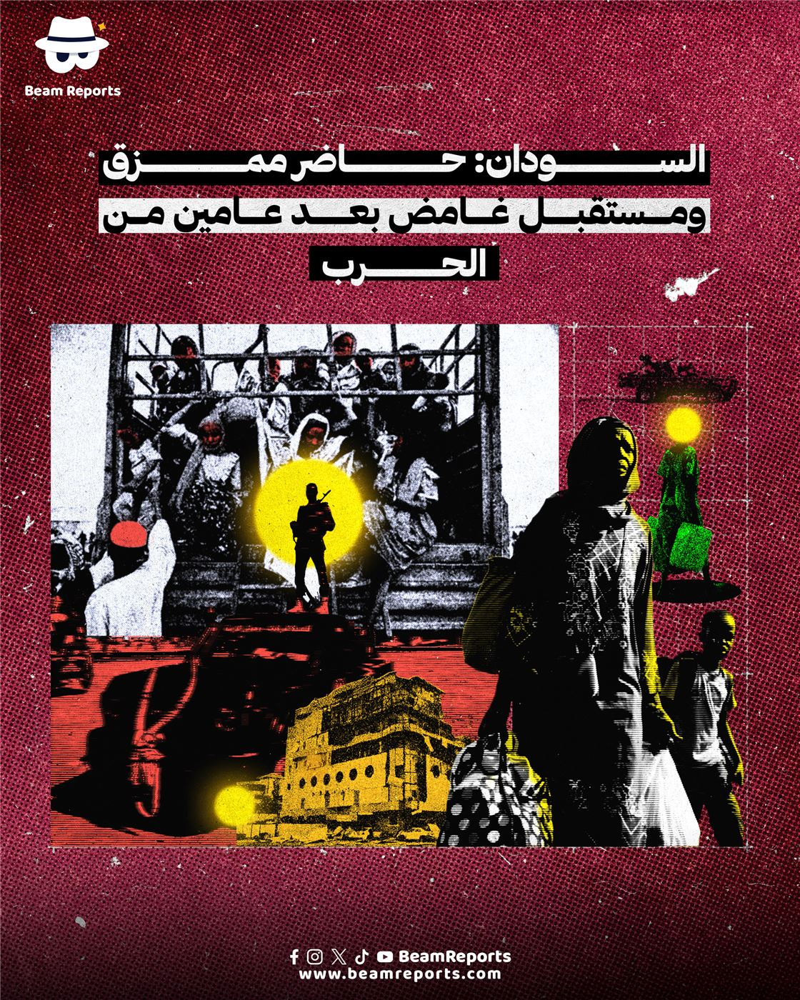
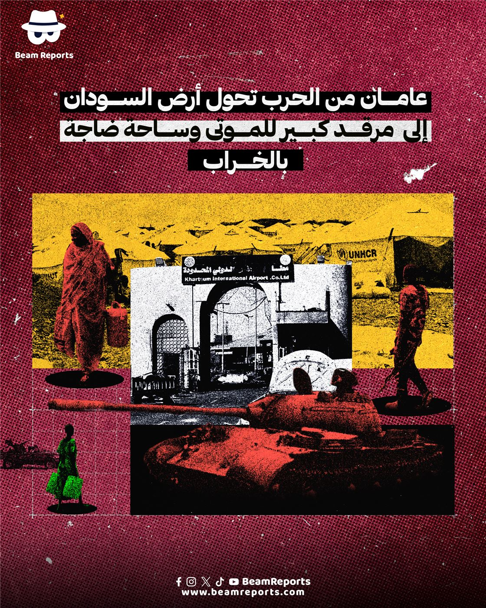
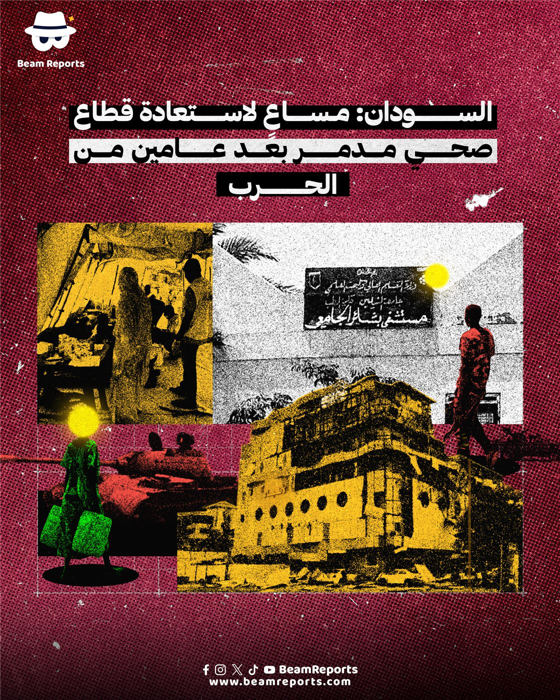

Sudan's War
Two years of conflict, told in one editorial series.

Context & process
Marking two years since the start of Sudan's war required condensing a large amount of political, humanitarian, and historical information into content built for social media, where most viewers would arrive with no prior context.
Rather than treating each poster as a standalone composition, I originated a shared visual system: consistent typography, a red-toned duotone palette, and a glitch/collage treatment, so all three posters would read as one editorial series. Each addresses a distinct aspect of the story: destruction, health infrastructure, and the fractured future ahead.
The decision
How do you convey the weight of two years of war without relying on graphic war photography that can retraumatize audiences and cross ethical lines for a news outlet?
I used degraded, high-contrast collage combining archival-style photography with illustrated figures, to reference documentary reality without directly reproducing graphic imagery.
The glitch and grain texture reinforces a sense of instability and rupture appropriate to the subject, while the consistent visual system keeps the series legible as one coherent editorial statement rather than three disconnected images.


One shared system, three distinct treatments, a single editorial voice across the series.
Outcome
Reflection
One Facebook post reached 11K views and 66 interactions, roughly 3x the other two, despite sharing the same visual system. Worth investigating: subject matter, posting time, or caption differences on that post, and applying the finding to future series.